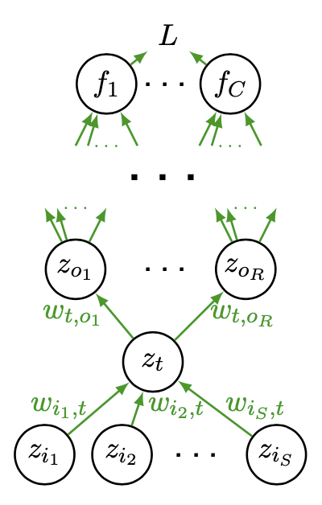

Neural Networks¶
In this section we introduce neural networks and its application for regression, classification, dimensionality-reduction, generation, etc.
Structure¶
Versus Machine Learning: Linear vs Hierarchical¶
Most machine learning relies almost entirely on linear predictors, where predictors can be non-linear features $\boldsymbol{\phi} : \mathcal{X} \rightarrow \mathbb{R}^{d}$ of the data.
$$ f_{y}(\boldsymbol{x} ; \boldsymbol{w}, b)=\boldsymbol{w}{y} \cdot \boldsymbol{\phi} (\boldsymbol{x})+b{y} $$
Most machine learning are shallow learning: hand-crafted, non-hierarchical $\boldsymbol{\phi}$.
Basic example:
polynomial regression: $\phi_{j}(x)=x^{j}, j=0, \ldots, d$
Kernel SVM: employing kernel $k$ corresponds to (some) feature space such that $k\left(\boldsymbol{x}{i}, \boldsymbol{x}{j}\right)=\phi\left(\boldsymbol{x}{i}\right) \cdot \phi\left(\boldsymbol{x}{j}\right)$. SVM is just a linear classifier in that space.
In contrast, in deep learning, a predictor that uses a hierarchy of features of the input, typically (but not always) learned end-to-end jointly with the predictor.
$$ f_{y}(\boldsymbol{x})=F_{L}\left(F_{L-1}\left(F_{L-2}\left(\cdots F_{1}(\boldsymbol{x}) \cdots\right)\right)\right) $$
A 2-layer Neural Network¶
The simplest case is a 2-layer neural network, which can be represented by
$$ f_{y}(\boldsymbol{x})=\sum_{j=1}^{m} w_{j, y}^{(2)} h\left(\sum_{i=1}^{d} w_{i, j}^{(1)} x_{i}+b_{j}^{(1)}\right)+b_{y}^{(2)} $$
In matrix form,
$$ \boldsymbol{f}(\boldsymbol{x})=\boldsymbol{W}{2} \cdot \boldsymbol{h} \left(\boldsymbol{W}{1} \cdot \boldsymbol{x}+\boldsymbol{b}{1}\right)+\boldsymbol{b}{2} $$
where $h$ is a non-linear activation function, and is applied elementwise; $\boldsymbol{x} \in \mathbb{R}^{d}, \boldsymbol{W}{1} \in \mathbb{R}^{m \times d}, \boldsymbol{W}{2} \in \mathbb{R}^{C \times m}, \boldsymbol{b}{2} \in \mathbb{R}^{C}, \boldsymbol{b}{1} \in \mathbb{R}^{m}$.
:::{figure} nn-two-layer

A 2-layer feedforward neural network :::
Softmax Layer¶
There are many other layers, e.g., the softmax layer, convolutional layer, residual connection etc. Here we introduce the softmax layer which is used for classification.
A softmax classifier computes probability of each class $c$ for an given input, and pass it to the loss node to compute loss. Suppose $\boldsymbol{x}$ is an input, then
$$ \begin{aligned} \boldsymbol{f}(\boldsymbol{x}) &=\boldsymbol{W}{2} \cdot \boldsymbol{h} \left(\boldsymbol{W}{1} \cdot \boldsymbol{x}+\boldsymbol{b}{1}\right)+\boldsymbol{b}{2} \ \hat{p}(y=c \mid \boldsymbol{x}) &=\exp \left(f_{c}(\boldsymbol{x})\right) / \sum_{j} \exp \left(f_{j}(\boldsymbol{x})\right) \end{aligned} $$
Then we use the estimated probability of the true label $y$ computed by the current model, denoted $\hat{p}(y \mid \boldsymbol{x})$, to obtain the negative log-loss:
$$ L(\boldsymbol{x}, y)=-\log \hat{p}(y \mid \boldsymbol{x})=-f_{y}(\boldsymbol{x})+\log \sum_c \exp \left(f_{c}(\boldsymbol{x})\right) $$
Activation Functions¶
There are several kinds of activation functions we can choose to build a neural network. Their advantages and weakness are discussed in trainability section.
Sigmoid and tanh¶
The sigmoid function is
$$ h(a)=\frac{1}{1+\exp (a)} $$
:::{figure} nn-sigmoid-plot

Plot of sigmoid function :::
The tanh function is
$$ h(a)=\tanh (a) $$
:::{figure} nn-tanh-plot

Plot of tanh function :::
The two functions are
Good: squash activations to a fixed range
Bad: gradient is nearly zero far away from midpoint $0$,
$$ \frac{\partial L}{\partial a}=\frac{\partial L}{\partial h(a)} \frac{d h}{d a} \approx 0 $$
so they can make learning sensitive to initialization, and very, very slow.
RELU¶
ReLU solves the problems of saturating gradient by making the non-linearity non-saturating, at least in part of the range. It greatly speeds up convergence compared to sigmoid (order of magnitude), and used as the “default” nonlinearity in recent work.
$$ h(a)=\max (0, a) $$
:::{figure} nn-relu-plot
Plot of ReLU function :::
Advantage of Deep Architecture¶
- Theorem (Neural networks approximation, Cybenko 1989)
2-layer net with linear output (sigmoid hidden units) can approximate any continuous function over compact domain to arbitrary accuracy (given enough hidden units).
In general, $>2$ layers can represent a given function more compactly.
- Example (Advantage of deep architecture)
Compute the parity of $n$-bit numbers, with AND, OR, NOT, XOR gates. Trivial shallow architecture: express parity as DNF or CNF. They are shallow functions, and need exponential number of gates. On the other hand, use deep architecture just use a tree of XOR gates.
Learning¶
For the discussion below, we are assuming feedforward, fully-connected networks. There are other options: convolutional networks, recurrent networks, transformers
Gradient Descent¶
The general form of gradient descent is
Iteration counter $t=0$
Initialize parameters $\Theta^{(t)}$ (to zero or a small random vector)
for $t = 0, 1, \ldots$
run forward propagation with $\Theta^{(t-1)}$ to compute the loss
$$ \mathcal{L}\left(\boldsymbol{X} , \boldsymbol{y}; \Theta^{(t-1)}\right) $$
compute gradient via chain rule
$$ \boldsymbol{g}^{(t)}(\boldsymbol{X}, \boldsymbol{y})=\nabla_{\Theta} \mathcal{L}\left(\boldsymbol{X} , \boldsymbol{y}; \Theta^{(t-1)}\right) $$
update the model parameters
$$ \Theta^{(t)}=\Theta^{(t-1)}-\eta \boldsymbol{g}^{(t)} $$
check for stopping criteria (convergence of loss / gradient, model performance, etc)
The learning rate $\eta$ controls the step size. The effect of different learning rates are shown in the below picture. There are many algorithm that optimizes the training process by modifying $\eta$ and $\boldsymbol{g} ^{(t)}$, e.g., AdaGrad, RMSProp, Adam. For more details on gradient descent, see here.
:::{figure} nn-lr-comparison

Comparison of different learning rate [Lecun et al 1996] :::
Backward propagation¶
How the gradient $\boldsymbol{g}$ is computed in each iteration?
- Definition (Backward propagation)
Aka backpropagation, refers to efficient computation of gradients with respect to all parameters via chain rule of differentiation.
- Example (Computation of Backpropagation)
In the neural network below, the node $z_t$ receives values from input nodes $z_{i_s}$ where $j=1, \ldots, S$ and feed its value to outpue nodes $z_{o_r}$ where $r=1, \ldots, R$.
:::{figure} nn-backpropagation 
Backpropagation [Shi 2021] :::
Then computation in node $z_t$ is
$$ \begin{aligned} a_{t} &= \left( \sum_{s = 1, \ldots, S} w_{i_s, t} z_{i_s} \right) + b_{t}\ z_{t} &=h\left(a_{t}\right) \end{aligned} $$
Then by the chain rule, the loss gradient w.r.t. $w_{i_s, t}$ is computed as
$$ \frac{\partial L}{\partial w_{i_s, t}}=\frac{\partial L}{\partial a_{t}} \frac{\partial a_{t}}{\partial w_{i_s, t}} $$
where $\frac{\partial L}{\partial a_{t}}$ can be computed recursively by
$$ \frac{\partial L}{\partial a_{t}}=\sum_{r=1}^{R} \frac{\partial L}{\partial a_{o_{r}}} w_{t, o_{r}} h^{\prime}\left(a_{t}\right) $$
:::{admonition,dropdown,note} How gradients are computed in a computer procedure
Usually a node object has two attributes: value and gradient. They are stored in node.value and node.grad respectively.
For instance, if we have three nodes $x,y,z$ with relation
$$\begin{aligned} y &= x^2 \ z &= 3y + 4x\ \end{aligned}$$
and computational graph
$$ x \quad \longrightarrow \quad z $$
$$ \searrow \qquad \nearrow $$
$$ y $$
Given $z\texttt{.grad}$, then a backpropagation procedure computes the gradient of $y$ and $x$ by
$$\begin{aligned} \text{initialize}\quad y\texttt{.grad} &= 0 \ y\texttt{.grad} &= 0 \ \text{update}\quad y\texttt{.grad} &\mathrel{+}= 3 \times z\texttt{.grad} \ x\texttt{.grad} &\mathrel{+}= 4 \times z\texttt{.grad}\ x\texttt{.grad} &\mathrel{+}= y\texttt{.grad} \times 2 \times x\texttt{.value}\ \end{aligned}$$
:::
Einstein Notation¶
In many neural networks models, we will use Einstein notation, since it
Improves tensor equations for tensors with many indices
Explicitly writing all indices of tensors where repeated indices in a product of tensors are implicitly summed.
Not being correspondence with framework notation. Most frameworks hide indices.
Examples
Slicing:
– $\boldsymbol{M}[i,j]$ : one element
– $\boldsymbol{M}[i,J]$: the $i$-th row of $\boldsymbol{M}$
– $\boldsymbol{M}[I,j]$: the $j$-th column of $\boldsymbol{M}$
– $\boldsymbol{M}[I,J]$: the full matrix $\boldsymbol{M}$
Product of tensors:
Repeated capital letters denote summation over those letters
For $\boldsymbol{y}=\boldsymbol{W}\boldsymbol{x}$
$$ \begin{aligned} \boldsymbol{y}[i] &=\sum_{j}\boldsymbol{W}[i,j]\boldsymbol{x}[j]\ & =\boldsymbol{W}[i,J]\boldsymbol{x}[J] \end{aligned} $$
For $\boldsymbol{y}=\boldsymbol{x}^{\top}\boldsymbol{W}$,
$$ \begin{aligned} \boldsymbol{y}[j] &=\sum_{i}\boldsymbol{W}[i,j]\boldsymbol{x}[i]\ &=\boldsymbol{W}[I,j]\boldsymbol{x}[I] \end{aligned} $$
Unsupervised Deep Representation Learning¶
Neural networks can be used to extract representation from unlabeled data. There are four categories of methods.
Use neural network as a form of out-of-sample extension with one of the losses we have discussed.
Parametric $t$-SNE [van der Maaten 2009]
Deep canonical correlation analysis [Andrew et al. 2013]
Autoencoders
Probabilistic generative models that double as learned representations (e.g. Probablistic PCA)
Restricted Boltzmann machines, deep belief networks (important in the development of deep learning but too old, complex, and lose favor)
Variational autoencoders
Future prediction models (including language models)
Self-supervised representation learning